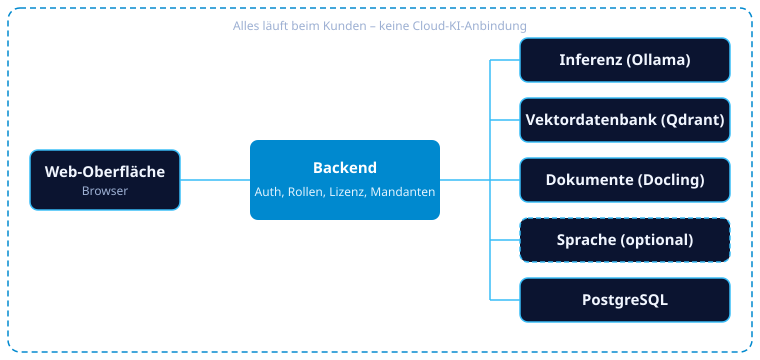

On-Premise KI-Assistent für den DACH-Mittelstand
Ein DSGVO-konformer Chat über Ihre eigenen Firmendokumente, der komplett lokal bei Ihnen läuft. Dokumente und Prompts verlassen Ihr Netzwerk nicht, es gibt keine Anbindung an OpenAI, Google oder andere Cloud-KI-APIs.
Wofür ist das gedacht?
Überall liegen sensible Dokumente, die nicht in eine US-Cloud dürfen. Ohne freigegebene Alternative landen sie oft trotzdem in privaten ChatGPT-Accounts. SovereignMind ist die selbst gehostete Alternative.
Kanzleien
Verträge und Akten durchsuchen, ohne Mandantendaten aus der Hand zu geben.
Personalabteilungen
Richtlinien und Personalunterlagen befragen, ohne dass sie das Haus verlassen.
Gesundheitswesen
Handbücher und Dokumentation nutzbar machen, mit voller Datenhoheit.
Industrie
Handbücher und Fertigungspläne per Frage finden statt per Ordnersuche.
Funktionen
Alles, was ein Team für den Alltag mit einem internen KI-Assistenten braucht.
Lokale KI
Sprachmodell und Embeddings laufen auf Ihrer Hardware (Ollama). Das Chat-Modell wird automatisch nach verfügbarem VRAM gewählt (NVIDIA, AMD, sonst CPU).
Chat mit Quellenbelegen
Fragen in natürlicher Sprache, Antworten mit klickbaren Verweisen ins Originaldokument. Antworten immer auf Deutsch.
Dokumentenverwaltung
PDF, DOCX, Tabellen u. a. werden automatisch geparst und durchsuchbar gemacht. Kategorien, Duplikaterkennung, Verarbeitungsstatus.
Nutzer und Rollen
Admin und Member, eigenes Branding pro Unternehmen.
Assistenten und Prompt-Bibliothek
Assistenten mit Rolle, Persönlichkeit, Avatar und eigener Stimme sowie wiederverwendbare Vorlagen für das ganze Team.
Anbindung interner Systeme
HTTP-Schnittstellen (DMS, ERP, Fachdatenbanken) lassen sich als Werkzeuge einbinden, die das Modell bei Bedarf selbst aufruft. Fertige Vorlagen für HubSpot, Microsoft 365, Jira und mehr.
Dateien im Chat
Dokumente direkt in einer Unterhaltung hochladen, ohne sie dauerhaft abzulegen.
Sprache
Diktat und Vorlesen mit mehreren Stimmen, lokal verarbeitet. Der Admin schaltet beides pro Unternehmen frei.
Wissenspakete
Vorverarbeitete Gesetze und Regelwerke als Pakete, die der Admin aus dem Katalog installiert oder als Datei importiert.
Themes
Jeder Nutzer wählt Stil, Hell/Dunkel und Akzentfarbe; das Unternehmen kann eine Akzentfarbe vorgeben.
Support-Nachrichten
Nutzer schreiben dem Admin über ein Kontaktformular direkt aus der App.
Admin-Bereich
Nutzer, Dokumente, Branding, Lizenz, KI-Einstellungen, Wissenspakete, Support, Nutzungsstatistik, Logs und Hardware-Dashboard.
Assistenten, Stimmen und Schnittstellen
Jedes Unternehmen stellt sich seine Assistenten selbst zusammen: mit Fachwissen, Charakter, Gesicht und Stimme, und mit Zugriff auf die Systeme, die im Haus schon laufen.
Assistenten konfigurieren
Rollen
Eine Rolle trägt die Fachanweisung, zum Beispiel „Vertragsprüfer“. Jeder Assistent hat höchstens eine; wird die Rolle gelöscht, bleiben die Assistenten bestehen.
Persönlichkeit
Ton und Charakter legt der Admin pro Assistent fest, dazu Anzeigename und eine Zusatzanweisung. Mitgeliefert sind Clara, Jonas, Sam und Robin.
Avatar
Eine von 20 mitgelieferten Vorlagen (KI-generierte Gesichter und Illustrationen) oder ein eigenes Bild. Im Chat erscheint der Avatar neben jeder Antwort, mit Hinweis „KI-Assistent“.
Wissen und Werkzeuge
Pro Assistent lassen sich Dokumentkategorien als Wissensbasis und Schnittstellen als Werkzeuge zuordnen.
Eigene Stimme
Der Admin weist jedem Assistenten eine Stimme zu. Mitglieder wählen: Standard, Stimme des Assistenten oder eigene Stimme.
Prompt-Bibliothek
Wiederverwendbare Vorlagen, die Nutzer im Chat mit einem Klick einfügen.
Beispiel: So kann ein Chat aussehen
Gemockte Unterhaltung mit vier Assistenten. Wählen Sie einen aus und lassen Sie sich die Antwort vorlesen.
Stimmenproben (Qwen3-TTS)
Quellen: M-AILABS Speech Dataset (Ramona Deininger, Karlsson), Thorsten-Voice (Thorsten Müller, CC0). Das Vorlesen im Beispiel-Chat nutzt die Sprachausgabe Ihres Browsers als Vorschau, im Produkt liest die gewählte Stimme vor.
Anbindung per API
Das Modell ruft angebundene Systeme bei Bedarf selbst auf. Die Aufrufe erscheinen als aufklappbare Karte im Chat, Zugangsdaten werden verschlüsselt gespeichert, erlaubte Ziel-Hosts begrenzt eine Allowlist.
Anbieter-Vorlagen
Fertige Vorlagen für HubSpot (CRM), Zendesk, Stripe, Notion, Jira Cloud, Hero (Handwerkersoftware) und Microsoft 365 mit OAuth2. Alle nur lesend.
Eigene Schnittstellen
Generische Gerüste für Volltextsuche, Terminabfrage und Ticketstatus, anpassbar an jedes interne HTTP-System wie DMS oder ERP.
Geführte Einrichtung
Die Vorlagenauswahl bietet Suche, Kategorie-Filter, Funktionsauswahl sowie Hinweise zu Zugangsdaten und Einrichtung.
Stimmen
Diktat und Vorlesen laufen komplett lokal. Auf einem Rechner mit GPU liest Qwen3-TTS vor, sonst Piper auf der CPU.
Mehrere Stimmen
Zur Auswahl stehen Ramona (Standard), Karlsson und Thorsten. Weitere Stimmen lassen sich als kleine Artefakte (ca. 45 KB) ergänzen, ohne den Dienst zu ändern.
Diktat
Spracheingabe per faster-whisper landet direkt im Eingabefeld des Chats.
Pro Unternehmen und Nutzer
Der Admin schaltet Diktat und Vorlesen einzeln frei und legt die Standardstimme fest. Nutzer wählen im Profil ihren Stimmen-Modus.
Architektur in Kürze
Alles läuft nach der Installation als Dienst im Hintergrund, ohne Docker und ohne WSL. Ollama und die Modelle liefert der Installer mit.

Screenshots
Chat, Admin-Bereich und Hardware-Dashboard (Beispieldaten). Ein Klick vergrößert das Bild.
Kontakt und Lizenz
Für Lizenzanfragen und Lizenzschlüssel wenden Sie sich bitte an den Anbieter. kontakt@example.com · Präsentation (17 Folien)
Zur Installation